Physics simulations created by p-simtor
Each demo was generated by a coding agent using the installed p-simtor skill, from the prompt shown on its card, in a separate project. Every page computes its motion from the real equations, shows its own verification, and runs entirely in your browser.
Get the skill on GitHub → npx skills add janosvajda/p-simtor
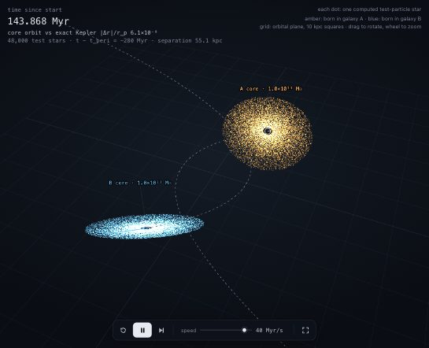
Two galaxies colliding
/p-simtor simulate two galaxies collidingTwo disk galaxies, 48 000 GPU-rendered stars: the prograde disk is torn into tidal tails, the retrograde one survives — Toomre & Toomre's classic result.
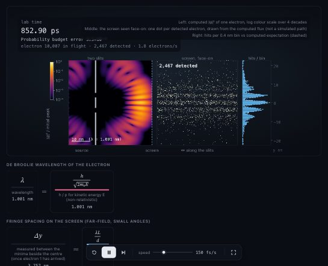
Double slit, one electron at a time
/p-simtor show the double-slit experiment with single electrons, where the interference pattern builds up one electron at a timeA 2D Schrödinger wave passes two nanometre slits; single electrons are drawn from the computed flux and the fringes build up dot by dot (KS p = 0.77), then vanish with a which-path detector.
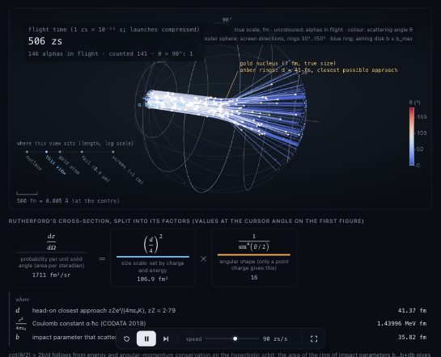
Rutherford's gold foil experiment
/p-simtor recreate Rutherford's gold foil experiment in 3D: alpha particles hitting a gold foil, and show why it proved the atom has a tiny nucleusAlpha tracks computed in a gold nucleus's Coulomb field at true femtometre scale; counts match 1/sin⁴(θ/2) (χ² p = 0.29); switch to Thomson's atom and every track goes straight.
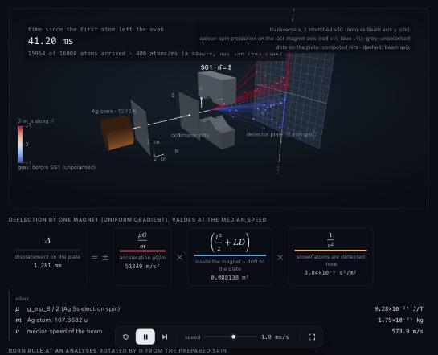
Stern–Gerlach in 3D
/p-simtor simulate the Stern–Gerlach experiment in 3D, including several magnets in a row, to show that spin is quantisedSilver atoms through one to three magnets; exact spin-½ evolution and the Born rule split the beam into two spots, z→x→z splits again, P(+) = cos²(θ/2).
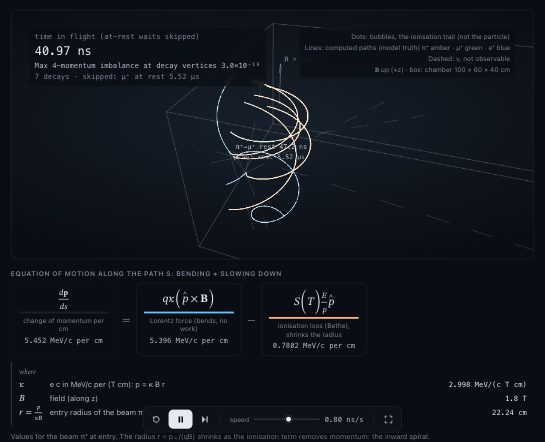
Bubble chamber: π → μ → e
/p-simtor make a 3D bubble chamber: charged particles curling in a magnetic field, with a pion decaying into a muon and then an electronπ⁺ → μ⁺ → e⁺ in liquid hydrogen: Lorentz force with Bethe energy loss, PDG lifetimes and V−A decays; bubbles ∝ 1/β², neutrinos invisible.
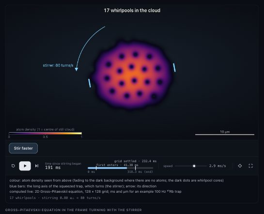
Stirred condensate: vortex lattice
/p-simtor show a Bose–Einstein condensate being stirred until quantum vortices appear and form a latticeThe 2D Gross–Pitaevskii equation in a rotating trap: stirring nucleates quantised vortices that settle into a triangular lattice; density matches Feynman's rule (1.05–1.12 × Ω/π).
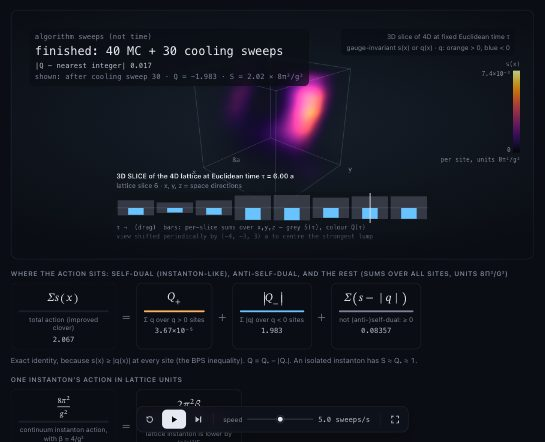
Instantons in the 4D lattice vacuum
/p-simtor visualise the 4D vacuum of a lattice gauge theory: show instantons as you move through Euclidean time, slice by sliceInstantons in a 4D SU(2) lattice vacuum: Monte Carlo, then cooling; topological charge density shown slice by slice through Euclidean time (Q = −1.98).
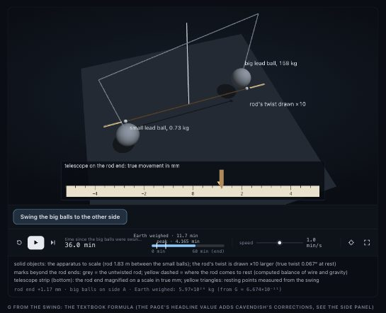
Cavendish experiment: weighing the Earth
/p-simtor recreate the Cavendish experiment in 3D: weighing the Earth with a torsion balanceCavendish's 1798 torsion balance: the four ball-pair torques drive the beam, the readings are fitted, and G and Earth's density come out (5.48 vs 5.448 explained).
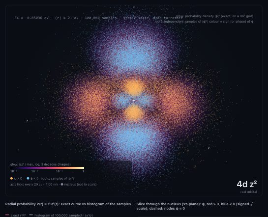
Hydrogen orbitals in 3D
/p-simtor visualize the 3D probability clouds of hydrogen orbitalsAll 55 hydrogen orbitals up to n = 5 as exact 3D probability clouds: a glowing |ψ|² volume plus sampled measurements coloured by the sign of ψ.
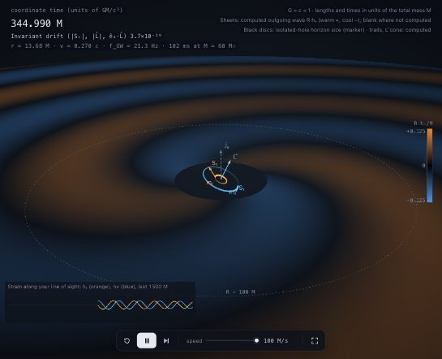
Black-hole binary inspiral in 3D
/p-simtor show two black holes spiralling together in 3DTwo spinning black holes spiral together while their orbit precesses; the computed gravitational wave spreads out as a spiral. The merger itself is marked not computed.
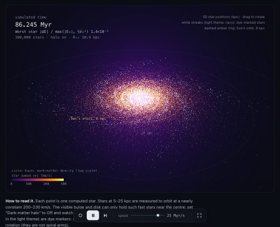
Why galaxies need dark matter
/p-simtor show why galaxies need dark matter, with a 3D galaxy of 100 000 stars100 000 stars orbit a Milky-Way model in 3D. Switch off the dark-matter halo and the disk swells from 10 to 39 kpc as stars escape.
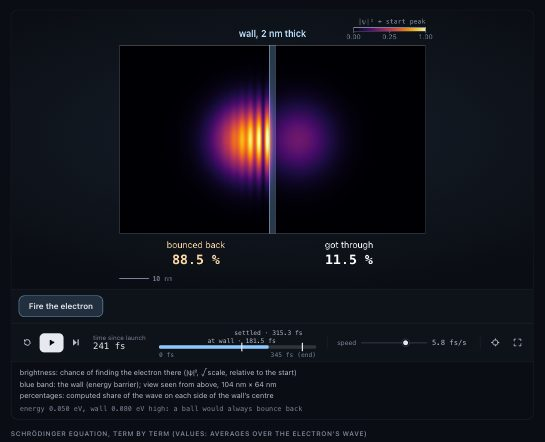
Electron wave packet tunnelling in 2D
/p-simtor show an electron wave packet tunnelling through a barrier in 2DAn electron's probability wave hits a barrier: most reflects, a quarter tunnels through, matching the exact quantum result.

Black-body radiation
/p-simtor simulate black body radiationPlanck's law live: the real colour of hot objects, from the cosmic microwave background to a 40 000 K star.

Binary black-hole merger
/p-simtor simulate two black holes mergingTwo black holes spiral together and chirp (post-Newtonian inspiral); the merger itself is honestly marked as not computed.

Quark confinement
/p-simtor explain quark confinement with an interactive, scientifically qualified visualizationLattice gauge theory computes the energy between two colour charges: it keeps rising with distance, so they cannot separate.

Why a double pendulum is chaotic
/p-simtor show why a double pendulum is chaoticTwo pendulums started 10⁻⁸ rad apart part ways after about 8 s; the Lyapunov exponent is measured live.

Three-level system heating up
/p-simtor show how the populations of a three-level quantum system change as it heats upBoltzmann populations of three energy levels as the temperature rises, with the heat-capacity peaks they cause.

Lennard-Jones fluid (2D)
/p-simtor create an interactive Lennard-Jones particle simulationMolecular dynamics of a 2D Lennard-Jones fluid: hot gas, condensing clusters and dense liquid.

Brownian motion of a pollen grain
/p-simtor simulate Brownian motion of a pollen grain in waterPollen grains jiggle in water; their spread grows as 4Dt, Einstein's relation, and Brown's real observation is one click away.

Heating a magnet
/p-simtor show how a magnet loses its magnetism when heatedA 128×128 Ising magnet heated past its Curie point: ordered domains break up into noise.

Radioactive decay chain, atom by atom
/p-simtor simulate a radioactive decay chain atom by atomRadon-222 progeny decaying atom by atom, against the smooth Bateman curves.

Salt dissolving in still water
/p-simtor simulate how salt dissolves in a glass of waterSalt on the bottom of a still glass dissolves in hours, but takes weeks to spread through the water by diffusion.
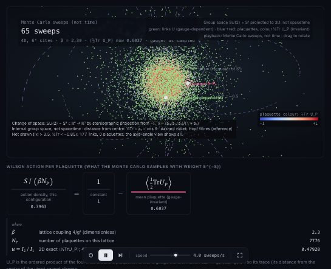
SU(2) gauge field on the 3-sphere
/p-simtor show the SU(2) gauge field as points on the 3-sphere in 4DEvery SU(2) link and plaquette as a point on the 3-sphere: a gauge transformation scatters the links while every plaquette trace stays fixed.
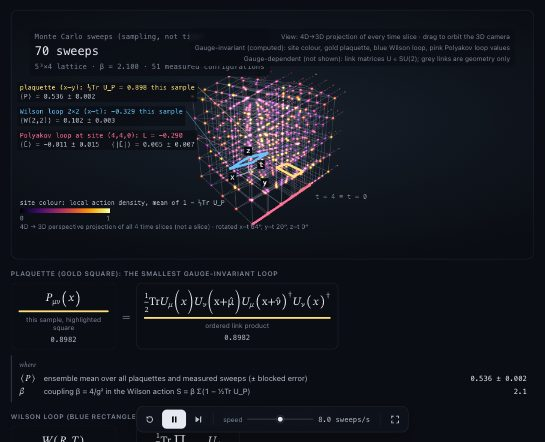
4D gauge lattice, projected
/p-simtor show a 4D spacetime lattice of a gauge theory, with links, plaquettes, a Wilson loop and a Polyakov loop, by rotating it in 4DA periodic 4D lattice rotated in 4D and projected to 3D, with a plaquette, a Wilson loop and a Polyakov loop measured on a live Monte Carlo configuration.
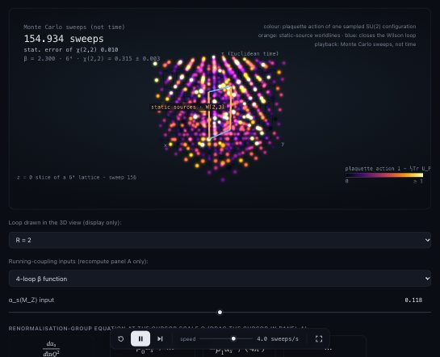
Asymptotic freedom and the strong force
/p-simtor show asymptotic freedom and the strong forceα_s(Q) from the 4-loop renormalisation group (PDG 2024 input) next to a live SU(2) lattice showing confinement: area law, Creutz ratio 72σ from zero.
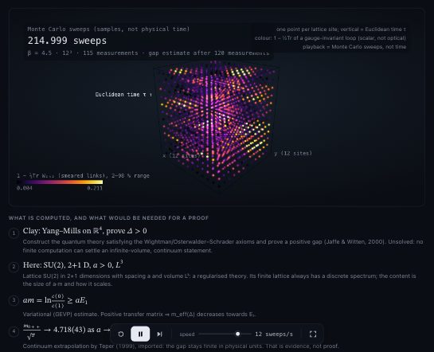
Yang–Mills mass gap: lattice evidence
/p-simtor prove the Yang-Mills existence and mass gapNot a proof (it's a Millennium problem): a lattice measurement of the glueball mass gap in 2+1D SU(2), matching Teper (1999) within 0.4σ.
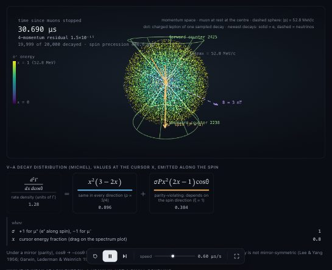
The weak interaction: polarised muon decay
/p-simtor simulate the weak forcePolarised muon decay sampled event by event in V−A theory: parity violation ⟨cos θ⟩ = 1/9, Michel spectra, and the lifetime from G_F to 0.66 ppm.
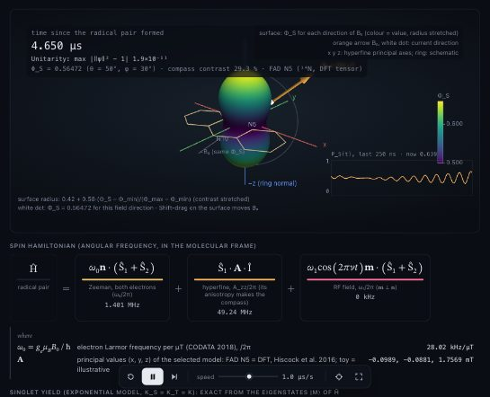
Radical-pair compass
/p-simtor show how birds might sense the Earth's magnetic field with the radical-pair mechanism in cryptochromeExact spin dynamics of a flavin radical pair: the singlet yield depends on the direction of a 50 µT field (29 % compass contrast); a hypothesis with strong behavioural support, shown with its open questions.
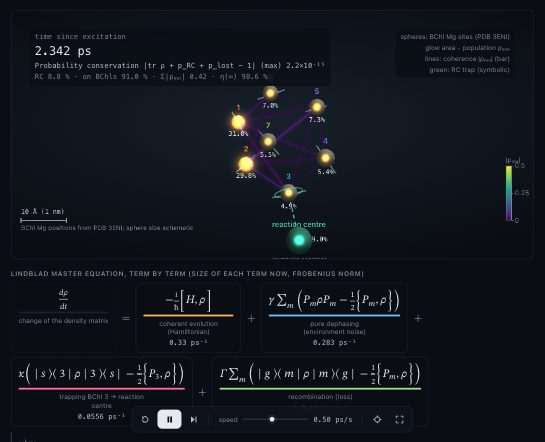
Energy transfer in the FMO complex
/p-simtor show how energy moves through the photosynthetic FMO complex, and whether quantum coherence helpsLindblad dynamics of the 7-site FMO complex at its crystal positions: noise-assisted transport peaks at 99 % efficiency, where coherence adds almost nothing over classical hopping.
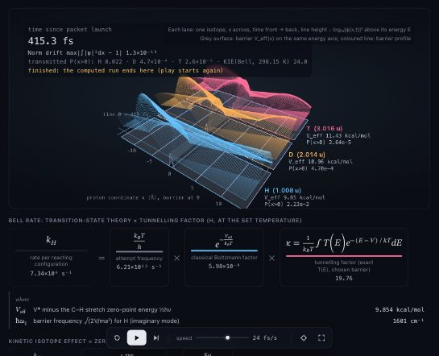
Hydrogen tunnelling in enzymes
/p-simtor show how enzymes use quantum tunnelling to move hydrogen, and why deuterium is so much slowerH, D and T wave packets meet the same transfer barrier; exact Eckart tunnelling gives the kinetic isotope effect, and a gated-tunnelling model gives the nearly temperature-independent KIE seen in lipoxygenase.
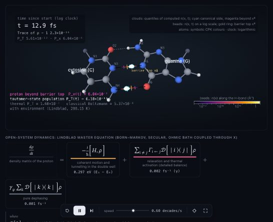
Proton tunnelling in a G–C base pair
/p-simtor show how protons can tunnel between DNA base pairs and whether that could cause mutationsLöwdin's double proton transfer in a G–C pair: exact double-well levels plus a Lindblad environment. Tunnelling raises the tautomer population 3× over classical, but tautomers live ~20 ps — an estimate, not proof, of a tiny role in mutations.
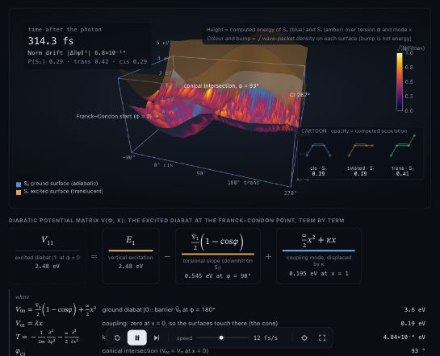
The first step of vision: retinal photoisomerisation
/p-simtor show the first step of vision: how light twists retinal in rhodopsin in 200 femtoseconds through a conical intersectionThe first step of vision: a wave packet on two coupled potential surfaces pours through a conical intersection as retinal twists, giving a 0.64 trans yield (0.65 measured) — in a reduced two-mode model whose yield depends on the published parameter set.